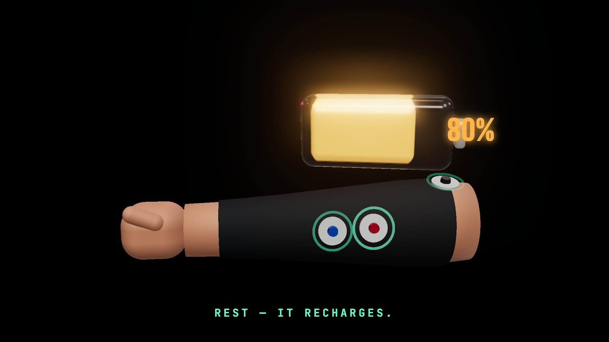
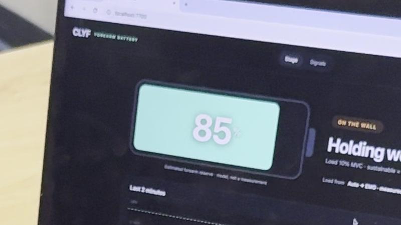
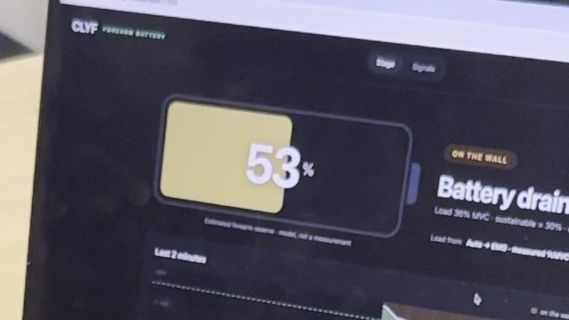
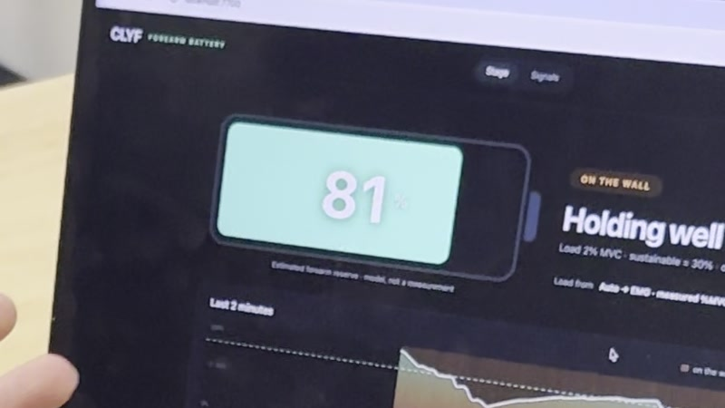
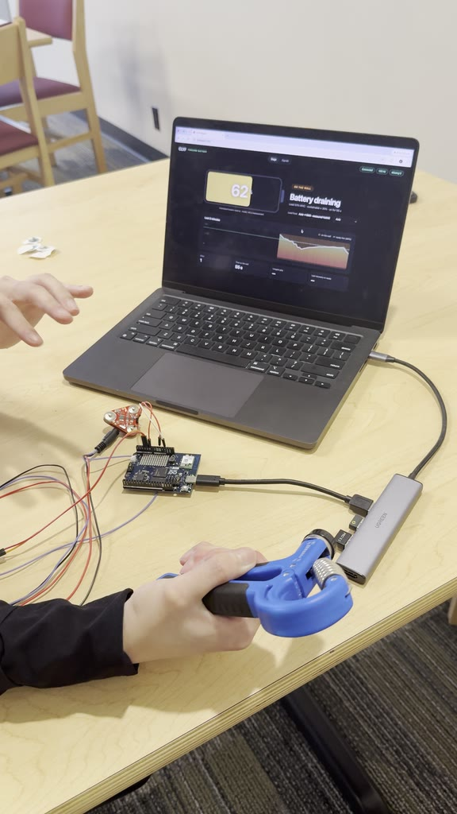
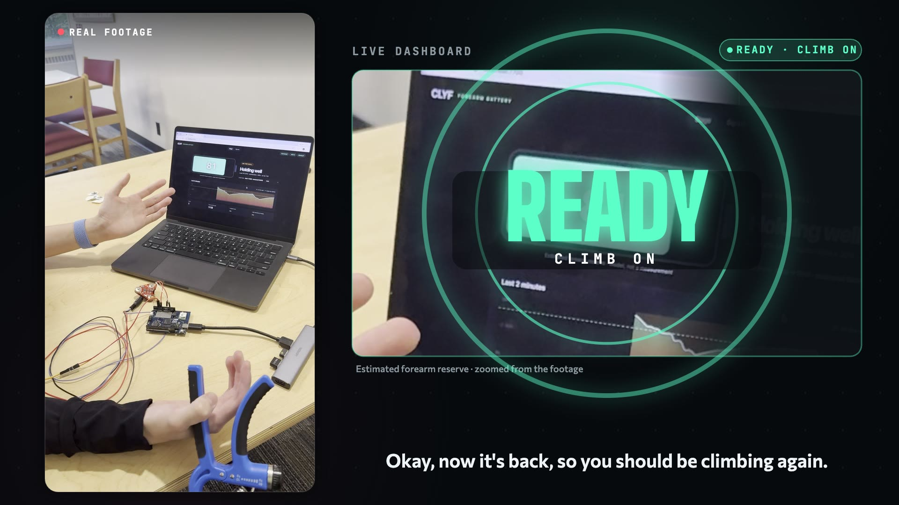
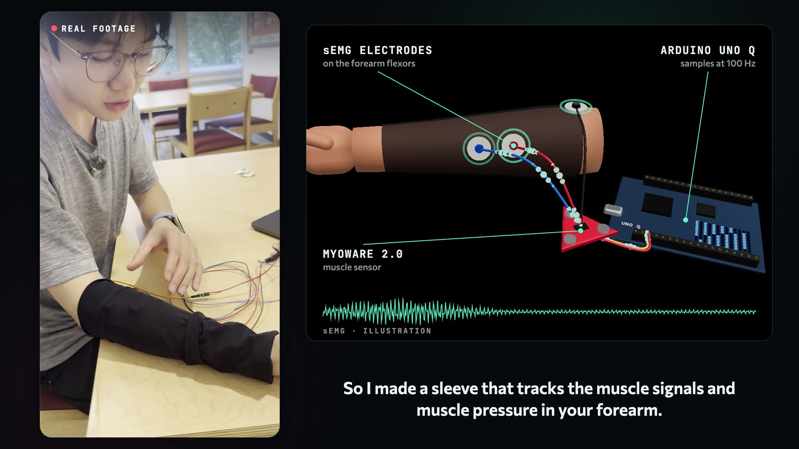

A forearm sleeve that tells climbers when to climb again.
On a hard route the forearms give out first. Grip fades, and the climb ends.
Hanging off a jug mid-route, you rest with no idea when you have actually recovered.
Rest too little and you fall off the next move. Rest too long and you burn the session.
Maps give drivers an ETA. Climbers get guesswork.
Effort above a sustainable level drains the battery.
It recharges, with a countdown: “Ready in 12 s”.
EMG sees a tense forearm and slows the recharge.
At 80% it glows and chimes: climb on.

FULL · 85
AFTER GRIPPING · 53
AFTER RESTING · 81 · READY
Surface EMG on the finger flexors, plus a force sensor on the hold.
The STM32 reads both channels on a fixed clock and streams every sample.
Python on the board relays to the laptop over USB. No Wi-Fi needed.
Auto-calibrated %MVC, bad-signal detection, and the battery model.
Rest exactly as long as you need on a project, and see effort across a session.
Objective grip load per attempt instead of “how pumped were you?”
Any grip-heavy activity where recovery decides performance.

A haptic tap from the watch when you're recovered. The Bluetooth link is already built.
Track the raw EMG's frequency shift, a known marker of muscle fatigue.
Learn each climber's own drain and recovery rates from their sessions.
Smaller board, battery power, and a cleaner fit.

Know when to climb again.
Jeremy Li · BigRed//Hacks 2026